Credit card servicing
Amazon Visa Transactions
Background
If this is the Amazon credit card why can't I access the account from Amazon
The Amazon Visa is the co-branded credit card with Chase, and Amazon's flagship payment product. Until 2023, managing the Amazon Visa through Chase led to friction, with almost half of 1 and 2 star reviews citing poor account management, 20% of new customers paying late fees due to delays on receiving the physical card, and 6% closing their accounts in 2020.
To reduce late fees and improve ratings, Amazon's S-team brought card management in-house. I led the UX for three key projects, Pay Bill, View Statements, and View Transactions, using customer insights from research to shape the UX strategy and inform product goals.
Project goals
The project aimed to reduce 1 and 2 star ratings by 10%, enabling customers to view, troubleshoot, and dispute Amazon Visa transactions by providing fast and clear navigation to transactions of interest and easier usability.
I scoped the competitor landscape, collaborated on business requirements, and obtained alignment with Chase business and legal. The effort delivered four things:
- A UX vision for transactions. The full experience, past what the first release could support.
- A UX proposal for the initial release. The subset that was feasible inside the platform we had.
- Accessibility annotations. Reading order, headings, roles, names, and states, handed over with the mocks.
- A testable prototype. Something reviewers and research could operate rather than read about.
Team and role
A Product Manager, me as the UX Designer, and 12 engineers. My responsibilities were:
- Interaction design flows
- High-fidelity mock ups
- Prototyping
- Organizing leadership reviews, at both Amazon and Chase
- Accessibility annotations
Design and outcomes
After aligning on the UX vision at Amazon and collaborating with Chase, we faced technical constraints due to Chase's API limitations, which impacted the initial feature set. I refined the UX to focus on feasible features for the first release, and secured Chase's commitment for future updates.
Through multiple reviews with teams across Amazon and Chase, I delivered a user-centric experience that achieved 90% of our original UX vision by the September 2024 release. The rest shipped by September 2025, so the whole vision is now live.
Accessibility annotations were a deliverable here, not a review step. Reading order, heading levels, roles, names, and states went to engineering with the mocks, including visually hidden text that summarizes the pending total so a screen reader user hears it from the heading instead of adding up the rows. The last two figures in Experience are the annotation sheet and the VoiceOver output from the shipped page.
10% Fewer 1 and 2 star ratings, against a 10% goal
4.1 App rating, up 0.4 points
+4.5% Spend lift, 36% of it off Amazon
100% Of the UX vision shipped by September 2025
Experience
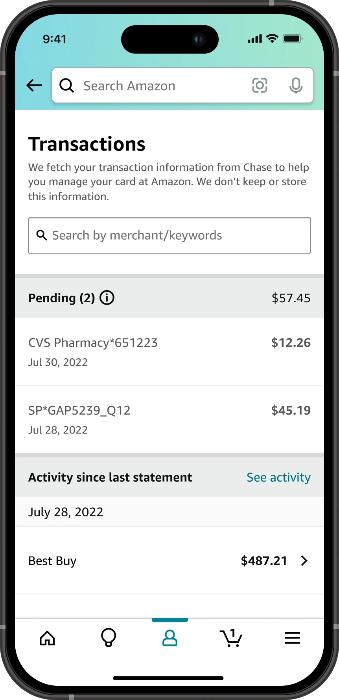
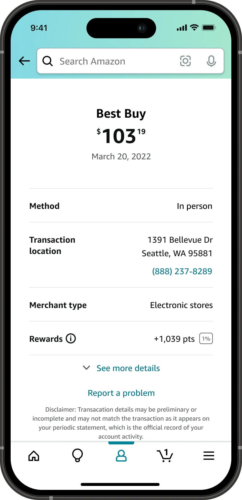
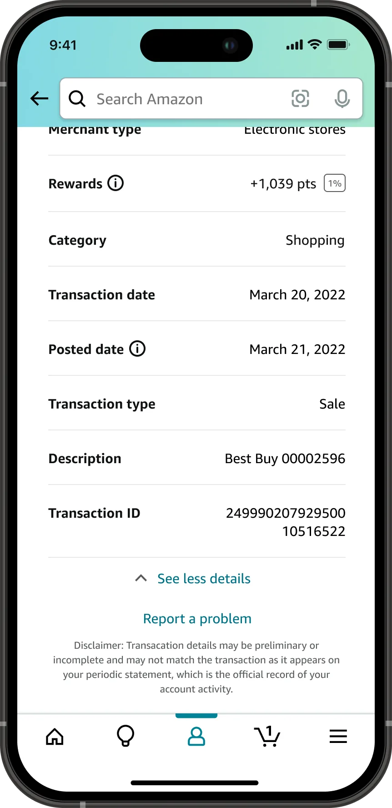
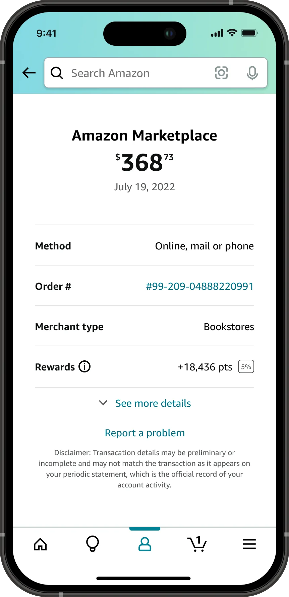
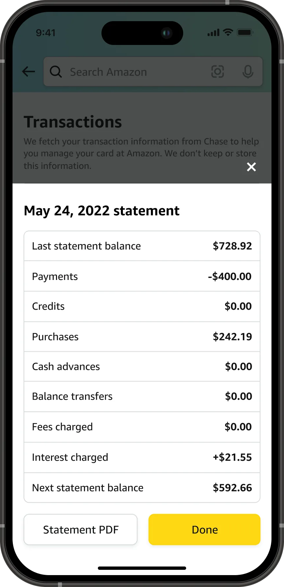
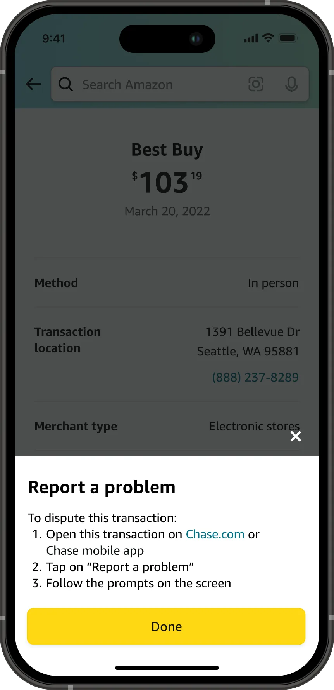
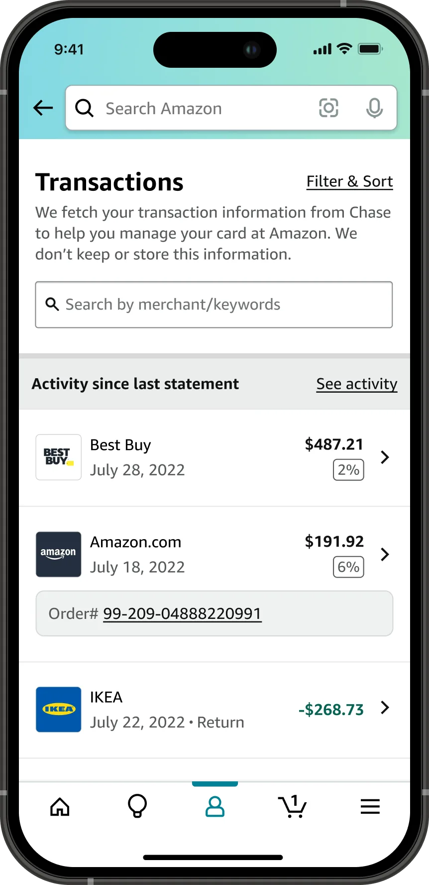
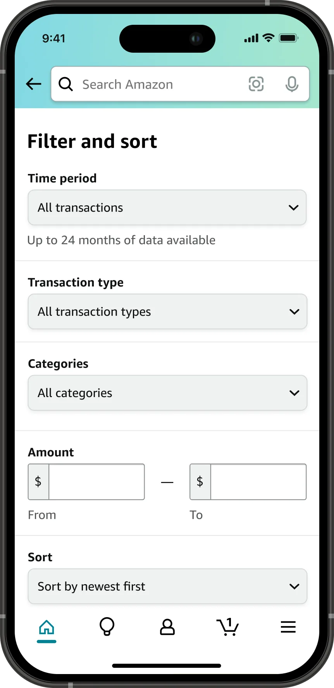
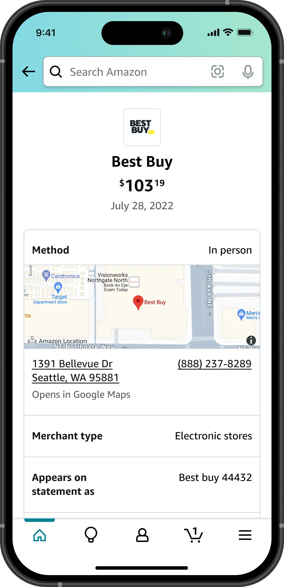
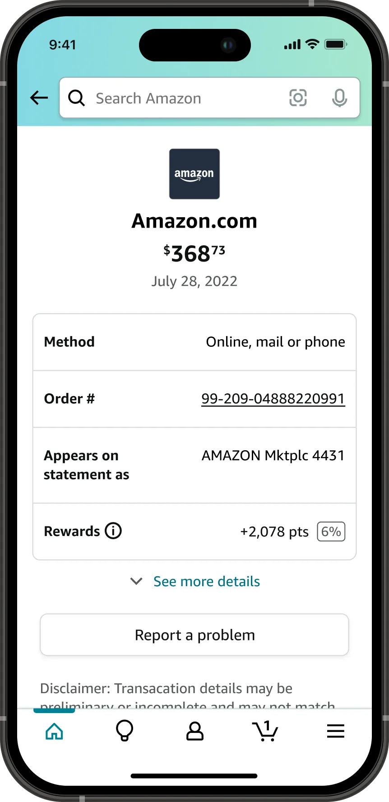
![An annotated desktop transactions page. Purple callouts mark the breadcrumb as a navigation landmark with aria-current set to page, Transactions as the level 1 heading, Filter and sort as a button with aria-expanded set to false, an aria-label on the search field, Pending and Activity since last statement as level 2 headings, the pending amount as aria-hidden true, visually hidden text reading you have x pending transactions totaling y dollars tied to the heading by aria-describedby, the transaction rows as unordered lists, and the order number as a link that opens in a new window.](../assets/img/transactions/accessibility-annotations.webp)
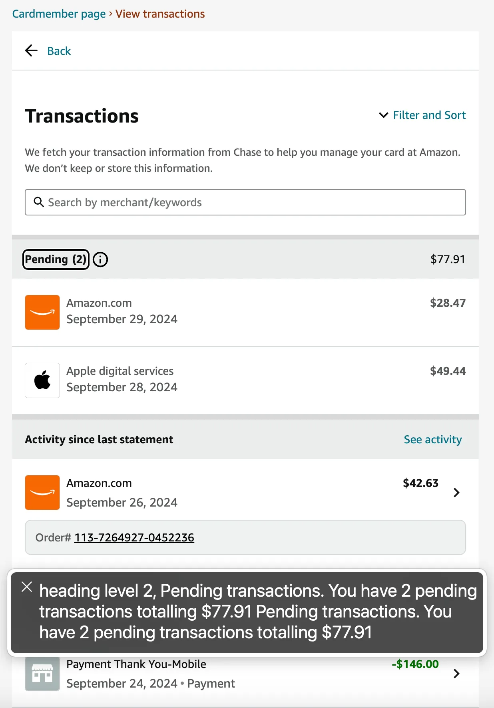
This page shows only parts of the project. In-depth and sensitive details, and the end-to-end UX, can be covered in person or during the interview process.